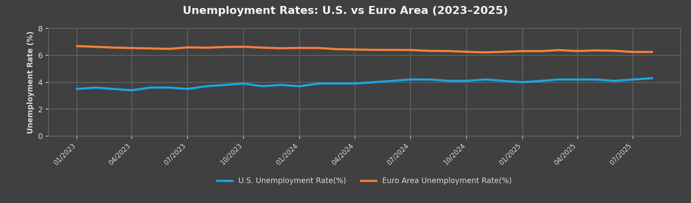
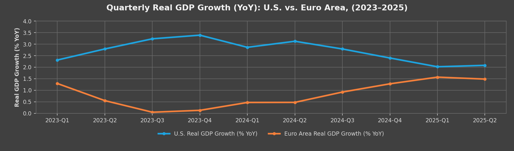
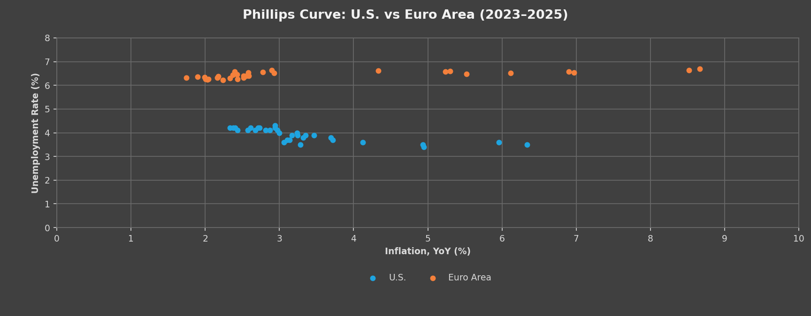

Do central bank wins translate to household wins?
The Finding
In the end, both the Federal Reserve and the European Central Bank achieved their narrow mandates of disinflation between 2023 and 2025. Inflation converged toward 2 percent, unemployment stayed low, and financial systems avoided crisis. Growth diverged more sharply: in 2024, U.S. real GDP growth averaged about 2.8 percent against about 0.8 percent in the Euro Area. In the first half of 2025, the U.S. ran near 2.1 percent and the Euro Area near 1.5 percent, still below the U.S. pace.
Yet beneath those aggregates, household balance sheets told a different story. From 2023 through mid-2025, U.S. household savings rates ran between 4.7 and 6.1 percent, with debt at 68 to 74 percent of GDP. By contrast, Euro Area households saved 13.4 to 15.2 percent and carried debt of 51 to 55 percent of GDP. These indicators show that while the macro picture converged, the micro foundations of resilience diverged.
Exhibits
Exhibit 1: Policy rates and inflation paths, U.S. vs. Euro Area, 2015 to 2025

Exhibit 2: Household saving rates and debt-to-GDP, U.S. vs. Euro Area, 2015 to 2025

Exhibit 3: Headline success vs. household reality, U.S. and Euro Area, 2015 to 2025

Why It Matters
GDP, inflation, and unemployment tell part of the story. Household debt and savings add another part. Euro Area member states maintain more robust social welfare systems and stronger worker protections, which may help explain why households there stayed more resilient amid slower growth. The United States delivered faster expansion, but its households carry more debt and hold less savings.
This suggests a wider set of measures when judging monetary policy outcomes, read alongside fiscal and social policy, domains neither central bank governs. What else should count when we measure economic success?
Method Note
Data. Policy rates are the federal funds rate (FRED) and the ECB main refinancing rate (ECB). Policy rates are lagged 12 months to align rate changes with their expected effect on inflation. Rate changes act on prices with a delay (Friedman, 1961), and a meta-analysis puts the average lag to the peak effect on prices at 29 months (Havranek and Rusnak, 2013). This brief uses 12 months, a conservative choice at the short end of that range. Inflation is U.S. CPI and Euro Area HICP, year-over-year. Unemployment and real GDP growth (year-over-year) are U.S. series from FRED and Euro Area series from Eurostat. Household saving rates come from BEA (via FRED) and Eurostat; the U.S. rate is net and the Euro Area rate gross, so levels are not strictly comparable. Household debt-to-GDP comes from the BIS. Monthly inflation and unemployment series run from 2015 through August 2025. The policy rate series runs from 2014 through August 2024. Unemployment, GDP growth, and the Phillips curve cover 2023 to 2025. Household series are quarterly: saving rates run through 2025 Q2 and debt-to-GDP through 2025 Q1.
What was compared. Each series was compared across the U.S. and the Euro Area over the same window. The question was whether disinflation toward the 2 percent target came with stable unemployment and continued growth, and whether household balance sheets looked the same on both sides.
Limitations.
- Policy rate data ends August 2024. It does not include the rate cuts that followed.
- The differences cannot be attributed to monetary policy alone. Fiscal and social policy sit outside the central banks' mandates and outside the scope of the data.
Supporting Charts
Figure 1: Unemployment rates, U.S. vs. Euro Area, 2023 to 2025

Figure 2: Real GDP growth, year-over-year, U.S. vs. Euro Area, 2023 to 2025

Figure 3: Phillips curve, U.S. vs. Euro Area, 2023 to 2025

Downloads
- Brief (PDF)
- Data workbook (Excel). The About tab lists each series, its source, and the 12-month lag.
References
- Bank for International Settlements. (n.d.). Household debt statistics. https://www.bis.org
- European Central Bank. (n.d.). Refinancing operations. https://www.ecb.europa.eu/mopo/implement/omo/html/index.en.html
- Eurostat. (2025). GDP and employment both up by 0.1% in the euro area, Euro indicators, Q2 2025. https://ec.europa.eu/eurostat/web/products-euro-indicators/w/2-05092025-ap
- Eurostat. (n.d.). Unemployment statistics. https://ec.europa.eu/eurostat/statistics-explained/index.php?title=Unemployment_statistics
- Federal Reserve Bank of St. Louis. (n.d.). FRED economic data. https://fred.stlouisfed.org
- Friedman, M. (1961). The lag in effect of monetary policy. Journal of Political Economy, 69(5), 447–466.
- Havranek, T., & Rusnak, M. (2013). Transmission lags of monetary policy: A meta-analysis. International Journal of Central Banking, 9(4), 39–76. https://www.ijcb.org/journal/ijcb13q4a2.htm